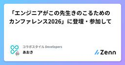
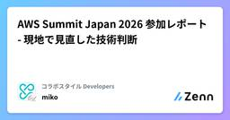
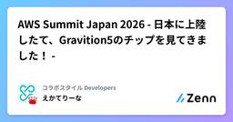
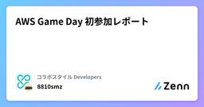
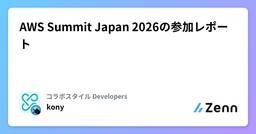

コラボスタイル Developersのフィード
https://zenn.dev/p/collabostyle
「ワークスタイルの未来を切り拓く」を理念に掲げ、リアルとデジタルの2つの働く場に向けた事業展開に留まらず、自社が率先して新しいワークスタイルに挑戦し、発信を行うことでワークスタイルの未来を切り拓いていきます。
フィード

「エンジニアがこの先生きのこるためのカンファレンス2026」に登壇・参加して
コラボスタイル Developersのフィード
2026年6月28日に開催された「エンジニアがこの先生きのこるためのカンファレンス2026」に、登壇者として、また所属するコラボスタイルのスポンサーブース担当として加わってきました。本記事は、自分が話したこと・話せなかったこと、聞いたセッションから得た学び、そして会場やブースで感じた熱気を、社内外で共有するためにまとめた振り返りです。 イベント全体の活気300名以上の参加者が集まり、そのうち100名以上が全てのスポンサーブースを回ってくれたとのことでした。スポンサーブースのエリアは人が溢れかえていて、熱心で関心を持ってくれる参加者が多いイベントでした。会場の日本科学未来館もと...
3日前

AWS Summit Japan 2026 参加レポート - 現地で見直した技術判断
コラボスタイル Developersのフィード
はじめに2026年6月25日（木）・26日（金）の2日間、幕張メッセで開催された「AWS Summit Japan 2026」に参加してきました。アマゾン ウェブ サービス ジャパン合同会社が主催する、日本最大級のAWS学習イベントです。今回はこのうち、26日（金）のDay 2のみに参加してきました！Day 1に参加したメンバーから、入場までに1時間以上の待ち時間が発生していたと聞いていました。ですが、Day 2は新規入場者が少ないためか受付がスムーズで、入場まで3分半ほどで済みました。今回はセッションへの参加よりも、ブース巡りや出展者・参加者とのコミュニケーションを重視して...
4日前

AWS Summit Japan 2026 - 日本に上陸したて、Gravition5のチップを見てきました！ -
コラボスタイル Developersのフィード
6/25-26の2Daysで開催されたAWS Summitへ参加して参りました。日本に上陸したばかりのGraviton5のチップが2箇所で展示されていました！※2枚目はちょうどお出かけのタイミングと重なってしまい残念です..2枚目の写真の奥はNitroカードです。Nitroチップは普段Nitroカードに収まっています。そして我々が起動するEC2インスタンスでGraviton5を指定すると、この美しいチップがNitroの管理下で起動されます。EC2は今やとんでもない種類がございますが、我々は2020~2022年頃には皆Nitroをデフォルトで使用するようになったのではないでし...
4日前

AWS Game Day 初参加レポート
コラボスタイル Developersのフィード
AWS Game Day に初参加してきました。今回は、その参加レポートです。先に結論を書くと、「AWSに詳しくないと無理でしょ…」と思っていた自分でも、kiroという強い味方と、初めて組むチームメンバーのおかげで、ちゃんと前に進められました。ただし、終わった後には「やっぱり本質は変わらないな」とも感じました。 AWS Game Day とは？自分の理解でざっくり言うと、AWS上に用意された“運用中の環境”に対して、起きている課題（障害・セキュリティ・コスト・構成のまずさ等）を見つけて適切に改善してそのポイント（スコア）を競うというような競技です。当然ながら、A...
7日前

AWS Summit Japan 2026の参加レポート
コラボスタイル Developersのフィード
本日AWS Summit Japanに初めて参加してきました！https://aws.amazon.com/jp/events/summits/japan/大阪から始発で移動し、10時過ぎに海浜幕張駅に到着したのですが、駅前からすでに大行列。。「これ、どこまで続いているんだ」というくらい並んでいました。結果、幕張メッセに入るまで1時間30分ほどかかりました😇救いは、雨がほとんど降らなかったことくらいでしょうか💦。もちろん基調講演には間に合わず、並びながらオンライン配信を視聴していました。※並んでいたほとんどの人が、同じようにオンラインで視聴していたようです。明日参加され...
7日前

外部依存ゼロの静的解析 × AIエージェントで、PostgreSQLからTiDBへの移行レビューを自動化する
コラボスタイル Developersのフィード
はじめにPostgreSQLからTiDB（MySQL互換の分散DB）への移行を進める中で、こんな悩みが出てきました。既存のSQL、本当にTiDBでそのまま動くの？RETURNINGとかJSONBとか、どこまで互換性あるんだっけ？毎回ドキュメント見に行くの面倒……そこで、AIエディタ（Kiroなど）のチャット上で /tidb-review ./sql と打つだけで、PostgreSQL固有のSQLを自動検出し「何が問題か」「どう直せばいいか」を教えてくれるスラッシュコマンド型のレビュースキルを作りました。本記事では、そのスキルの仕組み・実装・動作デモを紹介します。...
1ヶ月前
AI-DLCワークショップ
コラボスタイル Developersのフィード
社内でAI-DLC（AI-Driven Development Lifecycle）のワークショップをサイバーエージェントの小西さんを招いて実施しました。弊社では、AI-DLCを推しており、日頃から社内で試行錯誤をしながら進めています。今回は、AI-DLCを進める中での悩みなどをアンケートで事前に集め、そのアンケートをベースに「Q&A形式」でディスカッションするスタイルで行いました。 今日の前提：生成AIを取り巻く今後の展望6/1からGitHub Copilotの従量課金に切り替わっていることが話題になりました。今後、他のサービスもGitHub Copilot同様の従量課...
1ヶ月前
【新卒】二ヶ月目のコラボスタイルについて振り返る
コラボスタイル Developersのフィード
こんにちは !コラボスタイルでエンジニアとして働いております。新卒のtokuです。今回も一ヶ月の振り返り記事となっております。この記事は、社内に対しては月報として、コラボスタイルが気になっている社外の人に対しては「新卒2ヶ月目でどんなことをするのか」知ることができる記事として書いております。ぜひ参考にしていただければと思います。前回の記事(4月分)についてはこちらを参照してください。https://zenn.dev/collabostyle/articles/a060b064596f04 そもそもなぜブログを書いているのかコラボスタイルは企業理念・行動指針の「ワークスタ...
1ヶ月前
AI駆動開発勉強会 広島支部でモブエラボレーションのワークショップを行いました。
コラボスタイル Developersのフィード
AI駆動開発勉強会の広島支部として、第一回の勉強会を開催しました。今回は「AI駆動開発って結局なに？」の目線合わせをしつつ、後半はワークショップで参加者全員でモブエラボレーションを行い、CMSを作るところまでを行いました。!モブエラボレーションは、AWSの提唱しているAI-DLCの中で、inceptionフェーズで行うモブワークのことです。AIを中心にして、参加者全員でも要件定義やユーザーストーリーなどを作成する活動です。結論から言うと、運営・ファシリテーションは反省点もあるのですが、参加者のみなさんの視点の違いがすごく良くて、かなり“対話の密度が高い会”になりました。 ...
1ヶ月前
Claude Codeに仕事を任せたら確認待ちで止まっていた。しゃべらせたら今度はうるさかったので改善した。
コラボスタイル Developersのフィード
最近はClaude Code に作業を任せて、自分は別のタスクを進めて並行作業をすることが多いです。しかし実際にやっていると、自分のタスクが終わってからClaude Code に戻ったら確認待ちで止まっていたという悲しい事件が何度か発生しました。気づけばずっと待ち続けていたわけです。作業を任せた意味よ……。そこで見つけたのがClassmethodさんのこの記事 。https://dev.classmethod.jp/articles/claudecode-hooks-notify/Claude Code の Hooks 機能を使って、入力待ちや完了になったら音声で教えてくれる仕...
1ヶ月前
「EC2って何？」レベルだった私を救ったAWS学習本・講座まとめ
コラボスタイル Developersのフィード
新卒でITエンジニアとして採用され、AWSを勉強し始めたころ、私はかなり苦戦しました。当時の私は、「EC2インスタンスって何ですか？」と先輩に聞いてしまうレベルでした。わからないサービスがあれば公式ドキュメントを読むべきなのですが、公式ドキュメントは専門用語が多かったり、前提知識が必要だったりと初学者の心を打ち砕きがちです。特にAWSのサービス説明はお世辞にもわかりやすいとは言いにくく、何年か前にTwitterでAWS公式サイト風にカップ麺を紹介する投稿が話題になっていました。https://x.com/kazoo04/status/1523497558399627265?s...
1ヶ月前
Wasmでのメモリ管理を改善する
コラボスタイル Developersのフィード
先日、フロントエンドカンファレンス名古屋でLTを行いました。フロントエンドでWASMを扱うとき、パフォーマンスは上がるものの、メモリの扱いが実は難しく、倍のメモリ消費を行う場合があるという内容です。発表資料そのフロントエンドカンファレンスの懇親会で、bokuwebさんとその話をしたときに、「それ、ストリーミングで渡しておくことで対応可能になると思うよ」とアドバイスをしていただきました。実際にその実装をしてライブラリを更新したので、設計思想と実装のポイントを紹介します。 背景：既存実装の何が問題だったか既存のライブラリはこちらです。NPMGithub リポジト...
2ヶ月前
【26卒】コミュニケーションと情報発信に重きを置く、コラボスタイルに入社して一ヶ月を振り返る
コラボスタイル Developersのフィード
はじめに初めまして！今年の4月からコラボスタイルに新卒として入社しました、tokuと申します。現在は開発部 Technology&StrategyグループのR&D室に所属しております。この記事では、この一ヶ月の間でどのようなことを学び、どのような生活を送ったのかを新卒の視点でまとめました。弊社のメンバーだけでなく、「コラボスタイルって実際どんな雰囲気なの？」と気になっている就活生の疑問点が少しでも解消できれば幸いです。 一ヶ月の流れ4月1日から5月7日(執筆時)までを振り返ると大きく2つのフェーズに分けることができます。4月2日〜4月28日 全社研...
2ヶ月前
AI駆動開発のモブエラボレーションで押さえておきたいポイント
コラボスタイル Developersのフィード
モブエラボレーションを何度か回してみて「ここが整っていると進む」「ここが抜けると途端に詰まる」と感じたポイントを3つに絞ってまとめます。 はじめに（なぜ書くのか）コラボスタイルではAI駆動開発を標準プロセスに取り込むべく、いろいろ試行錯誤しています。自分もいくつかのプロジェクトで実践してきたのですが、うまく回るときと、なぜか回らないときがありました。「何が違うんだっけ？」と振り返ってみると、結局のところ“モブとして成立させるための前提”が揃っているかどうかに尽きると感じました。今回は、モブエラボレーションで押さえておきたいポイントを3つに整理しておきます。 モブエラボレーシ...
3ヶ月前
ネットワーク何もわからん！そんな私がネスペ合格までに役立った本まとめ
コラボスタイル Developersのフィード
どうもお疲れ様です。MESIです。私は普段アプリケーション開発をメインでやっています。そのためネットワーク機器を構築したり設定したりする機会はほとんどなく、エンジニア2年目くらいまではネットワークについてほとんど知識がありませんでした。当時はプライベートIPアドレスとグローバルIPアドレスの違いもよくわからないというレベルでした。しかし業務でクラウドやインフラに触れる機会が増え、ネットワークの知識も必要だと感じるようになりました。そこでネットワークの勉強を始めました。その後、地道に勉強を続けた結果、最終的には ネットワークスペシャリスト試験に合格するレベル まで知識を身に...
4ヶ月前
Google Apps Scriptで「今日誰休み？」をゼロにする。休暇連絡をSlackへ集約
コラボスタイル Developersのフィード
現在の私の所属組織では、Slackで休暇報告を各自がバラバラに行うスタイルです。人数も多いので、まとまった情報として流れてきたらいいなーと思い、試しに作ってみました。完成イメージ： 実装した機能2段階リマインド: 業務調整がしやすい「1週間前」と、最終確認の「前日」の2回、定時に通知。複数キーワード対応: 有給、代休、振休、半休など、入力のゆらぎを網羅。情報の集約: 複数人の予定があっても、Slackへの通知は1通のメッセージにスッキリまとめます。 技術スタックGoogle Apps Script (GAS)Google Calendar APISlack...
4ヶ月前
JAWS DAYS 2026 参加記録
コラボスタイル Developersのフィード
先日JAWS DAYS 2026に参加してきたため、ブース対応の感想や一部の視聴セッションの感想を記載していきます。 ブース対応今回は、コラボスタイルのメンバーとしてのAI駆動開発のすごろく体験のブース対応を経験させてもらいました。ブース対応は僕の中では初の経験だったので色々な不安はあったものの、結果的に良い経験ができたと感じました。初対面の場面では緊張してしまう方ですが、ブースに立ち寄ってくれる方はシンプルにすごろく体験を楽しんでいただいたため、こちらもゲームマスターとしてすごろくを一緒に楽しむ気持ちで対応することができました。すごろく内で発生するミッションを通して、参加者...
4ヶ月前
初参加・初ブース・初JAWS！「初めて尽くし」のJAWS DAYS 2026 参加ログ
コラボスタイル Developersのフィード
こんにちは！JAWS DAYS 2026に、弊社のダイヤモンドサポーター出展スタッフとして参加してきました。実は私、今回がイベント初参加。それどころかブースに立つのも初めてという「初めて尽くし」の1日でした。期待半分、緊張半分で挑んだ当日の様子を振り返ります。 目標参加するにあたり、自分の中で3つの目標を立てていました。「楽しむこと」を最優先に ： イベントへの恐怖心を克服し、次へ繋げる。知見を広げる ： セッションや外部の方との交流を通じて、外の世界を知る。ブース運営の完遂 ： 万全の準備で、来場者の方をしっかりお迎えする。 参加したセッション 1. ...
4ヶ月前
JAWS DAYS 2026 参加レポート
コラボスタイル Developersのフィード
先日、親子 or ペアワークショップ体験記を公開しました。こちらは身内を呼んでの参加のため個人の活動でしたが、それ以外にも弊社が出していたブースと参加したものについてのレポートです。 企業出展JAWS Days 2026では私の所属するコラボスタイルはダイヤモンドサポーターとして参加をしていました。弊社のブースでは、AI駆動開発すごろくと会社のカルチャーについて展示させていただいていました。ロールステッカーや、キースイッチのキーホルダーをノベルティとして配布をさせていただきました。担当者が頑張って作ってくれていたため、クオリティも高くて皆さんに喜んでもらえていました。h...
4ヶ月前
JAWS UG 大阪 AIDLC実践入門参加レポート
コラボスタイル Developersのフィード
2026年3月4日に行われたJAWS UG 大阪 AIDLC実践入門に参加をしてきました！普段広島在住のため、大阪のJAWS UGにはこれまで参加したことはありませんでしたが、以前に社内のワークショップでお世話になった小西さんがファシリテータでAIDLCをモブでやるということで遠方から参加しました！ 全体の流れ最初にAIDLCの概要の説明をしていただいたのちに実際に参加者も交えてモブ的にAIDLC-workflowのプラグインを導入したClaude CodeとVSCodeで実践をしていくという流れでした。 ワークショップClaude Codeのプラグインはこちらを利用しま...
4ヶ月前